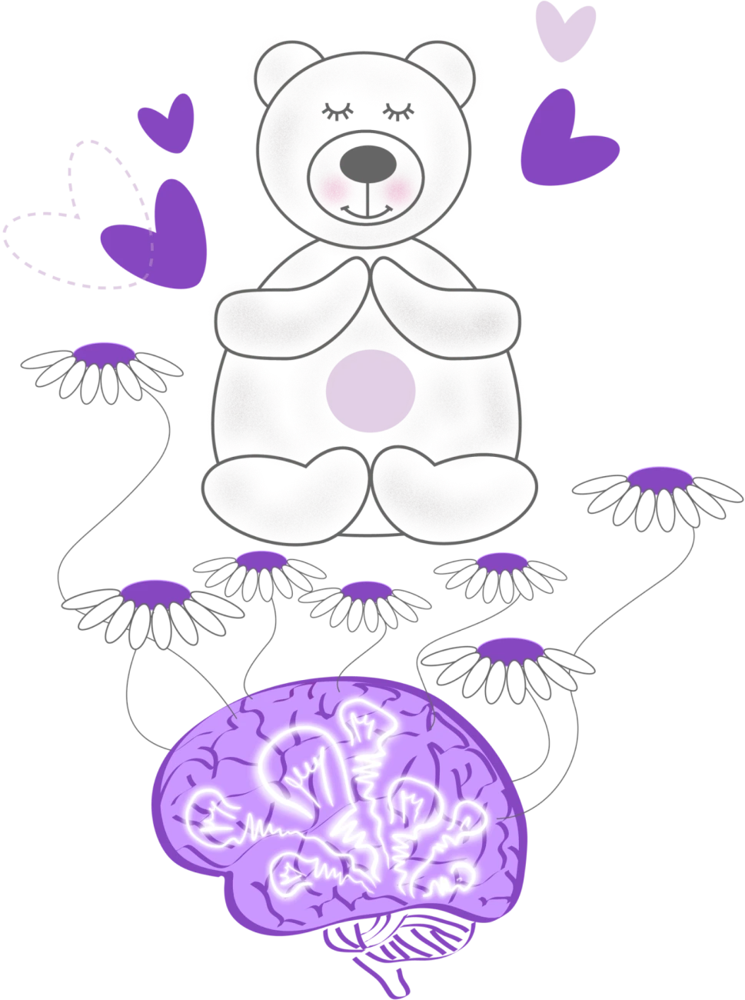
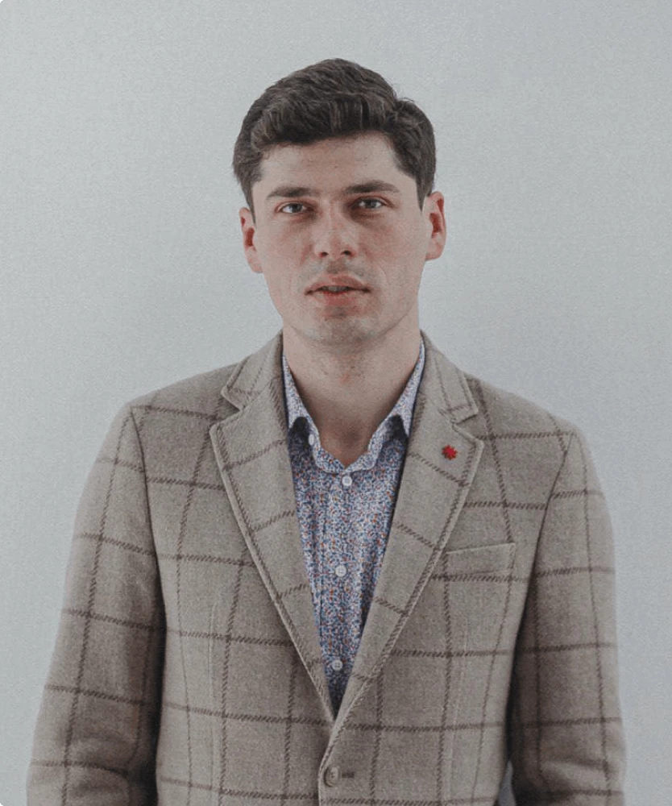
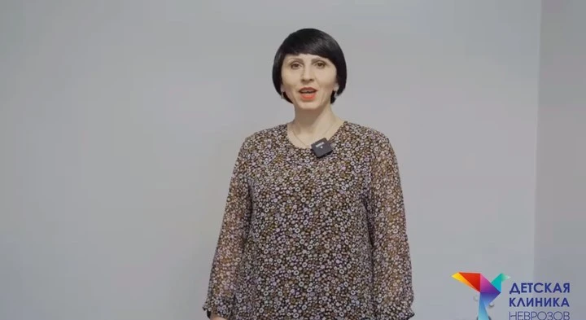
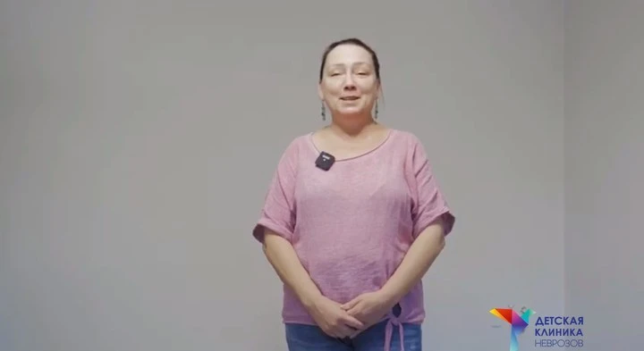

Допомагаємо дітям і підліткам упоратися з тривогою, страхами та труднощами поведінки.

Оберіть ситуацію, яка близька вашій дитині — ми підкажемо, які фахівці підключаються до її вирішення.
Дитині складно зосередитися, завершувати завдання, контролювати імпульсивні реакції або всидіти на місці? Допоможемо розібратися в причинах і визначити подальші кроки.
ДокладнішеОсобливості спілкування, соціальної взаємодії, поведінки та емоційної регуляції можуть бути приводом для консультації фахівців. Допоможемо оцінити розвиток дитини та визначити потребу в супроводі.
ДокладнішеДитина часто хвилюється, боїться залишатися сама, уникає певних ситуацій або переживає сильний страх? Допоможемо зрозуміти причини та підібрати формат допомоги.
ДокладнішеСпалахи гніву, імпульсивність, замкнутість або часті конфлікти можуть мати різні причини. Фахівці допоможуть розібратися та визначити потрібну підтримку.
ДокладнішеДитина боїться помилок, соромиться висловлюватися, сумнівається у власних силах або болісно сприймає критику? Психолог працюватиме з емоціями та впевненістю.
ДокладнішеДитині важко вчитися, організовувати завдання, зосереджуватися або адаптуватися до навантаження? З’ясуємо, що саме заважає навчанню та яка допомога доречна.
ДокладнішеДитині складно заводити друзів, домовлятися, відстоювати власні межі або будувати стосунки? Психолог допоможе розвивати навички спілкування та розуміти емоції.
ДокладнішеЗміни харчових звичок, обмеження їжі, сильний страх набрати вагу або надмірна стурбованість зовнішністю. Психіатр оцінює стан, психолог працює з емоціями та самооцінкою.
ДокладнішеТривале емоційне напруження може супроводжуватися різними скаргами та змінами самопочуття. Консультація допоможе оцінити стан та потребу в додаткових обстеженнях.
ДокладнішеЯкщо підліток демонструє ризиковану поведінку, вживає психоактивні речовини або має труднощі із самоконтролем — важливо вчасно оцінити ситуацію та потребу в допомозі.
ДокладнішеЯкщо мовлення або інші навички дитини розвиваються повільніше, ніж очікується для її віку, важливо оцінити розвиток та визначити необхідні обстеження.
ДокладнішеПсихічний стан дитини може змінюватися по-різному. Дитячий психіатр проведе детальну оцінку стану та допоможе визначити подальшу тактику.
ДокладнішеОпишіть ситуацію — медичний адміністратор уважно вислухає та допоможе підібрати потрібного фахівця.
Отримати допомогу з виборомМи знаємо, що звернення до фахівця викликає хвилювання. Для нас важливо підтримати родину на кожному етапі.
Враховуємо вік та емоційний стан, створюємо комфортні умови для поступового контакту.
Надаємо рекомендації, відповідаємо на запитання та допомагаємо краще розуміти потреби дитини.
Психіатр і психолог працюють разом та узгоджують підходи — з дотриманням конфіденційності.
Універсальних рішень не існує — визначаємо та коригуємо допомогу під конкретну ситуацію.
Творчі завдання, пісочна терапія та бережні методики, що відповідають віку дитини.
З малими дітьми лікар спілкується з батьками та з’ясовує історію розвитку. З підлітками можлива окрема бесіда.
Оцінюється емоційний стан, поведінка та особливості розвитку дитини.
Батьки отримують рекомендації, за наявності показань — схему лікування або направлення до суміжних фахівців.
За потреби готується письмовий висновок (повідомте про це при записі). Інструментальні обстеження (ЕЕГ, МРТ, КТ) у клініці не проводяться — лікар надає направлення за потреби.
Усі фахівці мають відповідну освіту та досвід. Ви можете обрати конкретного лікаря для запису.



Залиште заявку — наш медичний адміністратор уважно вислухає вас, відповість на запитання та допоможе підібрати потрібного спеціаліста.